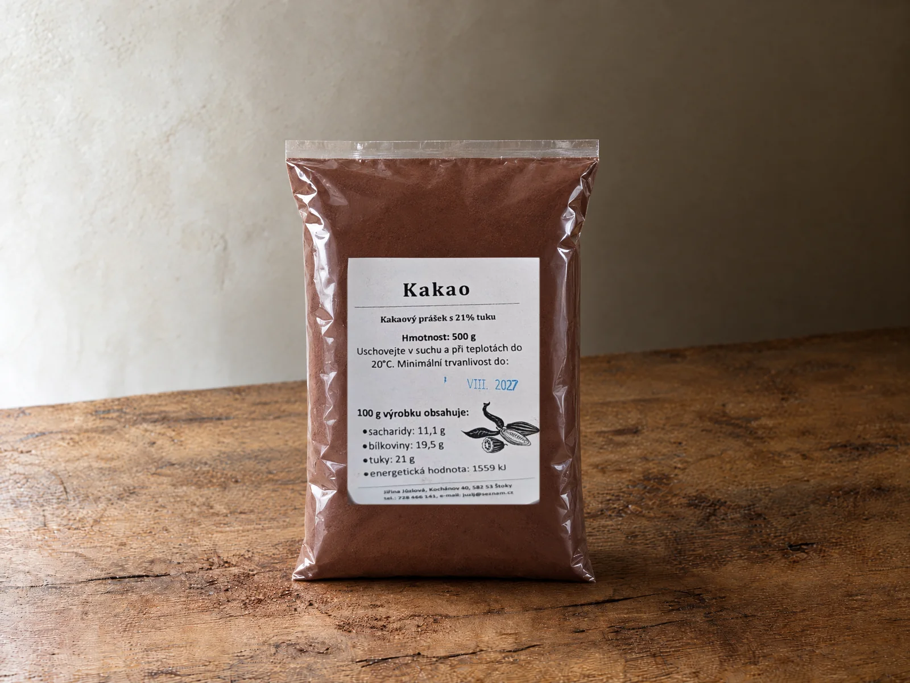

Kakaopulver holländischer Art mit 20–22 % Kakaobutter: Farbe, die im Kuchen und im Eis dunkel bleibt
Alkalisiertes Pulver aus Kakaomasse, ohne Zuckerzusatz, frei von den 14 EU-Allergenen. Für Lebkuchen, Cremes, Trinkkakao und Speiseeis. Laborzertifikat zur Charge auf Anfrage.

- Preis
- 500 g / 270 Kč bei Abholung in der Werkstatt · 540 Kč/kg · etwa 50 Löffel pro Packung
- Bestellung
- +420 728 466 141 · täglich 8–19 Uhr
Lieferung nach Absprache; der Postversand kostet extra.
So sieht die Packung aus


Warum das Fett zählt
Nach EU-Recht braucht ein Pulver mindestens 20 % Kakaobutter, um Kakaopulver heißen zu dürfen; darunter gilt es als fettarmer Kakao. Unser Kakao ist schwach entölt mit 20–22 %; stark entölter Supermarktkakao liegt bei 10–12 %. Mehr Kakaobutter bedeutet dunklere Farbe, volleren Geschmack und glattere Creme.
Herkunft
Bohnen aus West-Zentralafrika, in Bananenblättern fermentiert und sonnengetrocknet. Alkalisiert mit natürlichen Salzen auf pH 7,8–8,2 — daher das satte Rotbraun und der runde Geschmack ohne Säure.
Was nicht drin ist
Kein Zuckerzusatz (0,9 g natürlicher Zucker je 100 g). Keines der 14 EU-Allergene, Gluten unter 20 ppm. Vegan.
Wofür
Backen
Lebkuchen, Gugelhupf, Brownies — Teige, die nach dem Backen satt kakaobraun bleiben sollen.
Getränke
Trinkkakao und Shakes — in Milch bleiben Farbe und cremiger Geschmack erhalten.
Cremes
Füllungen und Cremes — das Pulver selbst bringt keinen Zucker mit.
Bestreuen
Schnitten, Rouladen und Keksdesserts — feiner dunkler Staub, der nicht klumpt.
Mit Vanillepudding
In unseren Vanillepudding rühren: Schokocreme aus zwei Mischungen.
Speiseeis
Glatte Textur und dunkle Farbe, die im Gefrierfach nicht verblasst.
Was im Kakao steckt
Je 100 g laut Nährwerttabelle auf der Packung: viele Ballaststoffe, viel Eiweiß, von Natur aus wenig Zucker, kein Zuckerzusatz.
Dazu Magnesium 490 mg, Kalium 4 400 mg und Eisen 31 mg je 100 g.
Werte je 100 g nach EU-Verordnung 1169/2011. Kakao verwenden Sie löffelweise — je Portion ein Bruchteil der Tabelle.
Technische Daten
- Kakaobutter20,0–22,0 %
- pH (10 % Lösung)7,8–8,2
- Feinheitmin. 99,5 % unter 75 µm
- Feuchtemax. 5,0 %
- Schalenmax. 1,75 %
- Schwermetalleinnerhalb der Grenzwerte der Verordnung (EU) 2023/915
- EU-Allergenekeines der 14
- Gluten< 20 ppm
- Ernährungvegan, vegetarisch
Lagerung
Trocken, fern von starken Gerüchen, ideal bei 15–20 °C und unter 50 % Luftfeuchte.
Für Konditoreien und Eishersteller
Mengenpreis, Chargenzertifikat, Abholung oder Lieferung. Anfrage über die Seite „Für Küchen“.
Häufige Fragen
Warum ändert sich der Kakaopreis?
Kakao ist eine Börsenware: Wetter, Nachfrage und neue EU-Grenzwerte für Schwermetalle bewegen den Preis. Die Liste passen wir an, wenn sich unser Einkauf ändert.
Ist das Rohkakao?
Nein. Er ist alkalisiert (holländisch) und geröstet. Rohkakao ist ungeröstet und schmeckt bitter und grasig; unserer ist mild und rund mit Röstnoten.
Eignet er sich für Speiseeis?
Ja. Der höhere Kakaobutteranteil gibt Eis eine glatte Textur und eine dunkle Farbe, die im Gefrierfach nicht verblasst.
Woher kommt unser Kakao?
Aus Westafrika, vor allem aus der Elfenbeinküste, Ghana, Kamerun und Nigeria. Der Baum ist Theobroma cacao. Die Bohnen werden in Bananenblättern fermentiert, an der Sonne getrocknet, dann gemahlen und zu Kakao holländischer Art alkalisiert.
Warum ist der Cadmiumgehalt in unserem Kakao niedrig?
Cadmium gelangt aus dem Boden in die Bohne. Hohe Werte sind typisch für Kakao von vulkanischen Böden in Teilen Lateinamerikas, etwa aus Peru und Ecuador. Westafrikanische Böden enthalten wenig Cadmium, und damit auch der Kakao von dort. Der EU-Grenzwert für Kakaopulver liegt bei 0,60 mg/kg (Verordnung (EU) 2023/915); den Wert unserer Charge finden Sie im Laborzertifikat, das wir auf Anfrage senden.
Und Blei?
In Westafrika ist Blei das Metall, auf das geachtet wird. Es bleibt auf der Schale der Bohne, nicht im Kern, und wird beim Schälen vor dem Mahlen mit der Schale entfernt. Auch Blei steht im Chargenzertifikat.